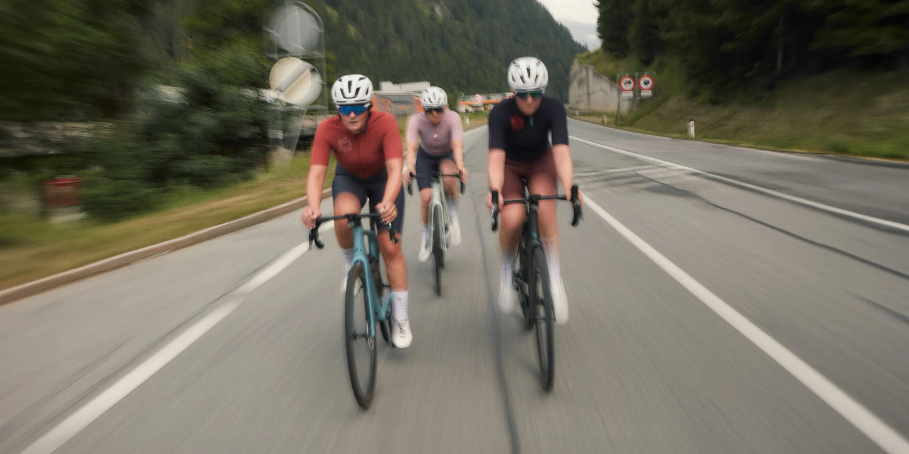
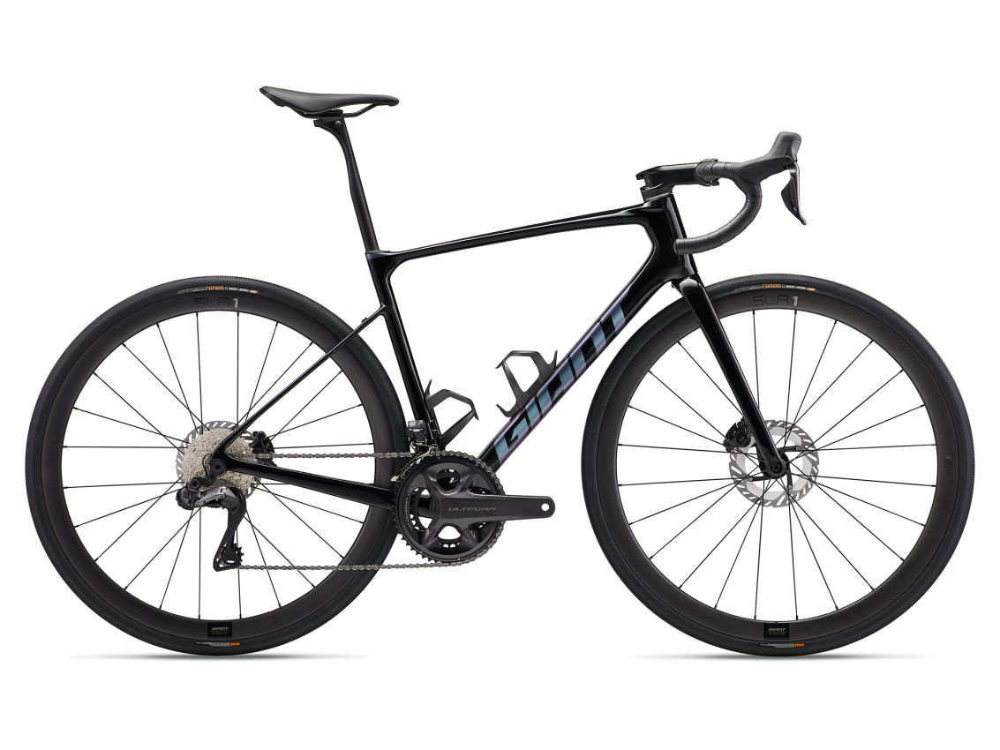
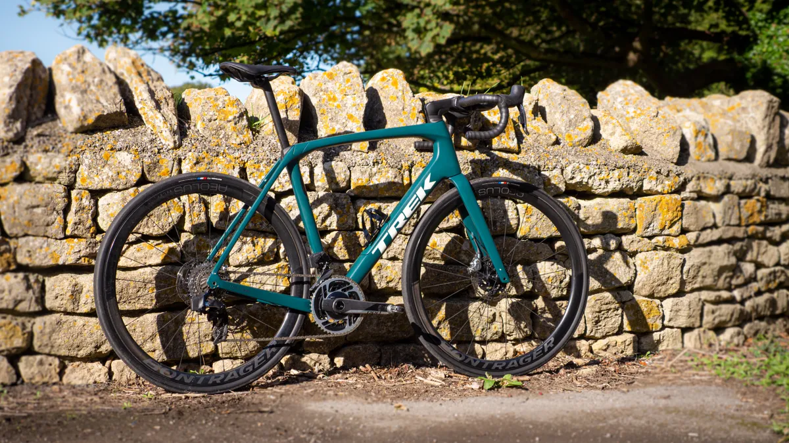

Road Bicycles
Road bicycles are designed for fast travel on paved roads. They have lightweight frames and thin tires. They are great for long-distance rides and competitive racing.
Features
- Lightweight frames
- Thin tires for reduced friction
- Drop handlebars for an aerodynamic position
- Multiple gears for different terrains
Benefits of Road Bicycles
- Speed: Designed for fast travel on paved roads.
- Efficiency: Lightweight frames and thin tires reduce effort needed.
- Fitness: Ideal for long-distance rides and building endurance.
- Competition: Perfect for racing and competitive cycling.
Types of Road Bicycles
Race Road Bicycles
Designed for competitive racing, these bicycles offer high performance and speed.
Endurance Road Bicycles
Built for long-distance rides, these bicycles provide comfort and stability over extended periods.
Maintenance Tips
- Regularly check the tire pressure and ensure they are properly inflated.
- Keep the bicycle clean and free from dirt and debris.
- Lubricate the chain and gears regularly to ensure smooth operation.
- Inspect the brakes and make sure they are functioning correctly.
Buying Guide
When choosing a road bicycle, consider the following factors:
- Intended use: Determine if you'll be using the bicycle for racing, endurance rides, or general fitness.
- Frame material: Choose between aluminum, carbon fiber, or titanium based on your preferences and budget.
- Comfort features: Look for features like ergonomic saddles and handlebars.
- Gearing: Ensure the bicycle has appropriate gearing for the terrains you'll be riding on.
- Price: Compare features and prices to find the best value for your needs.